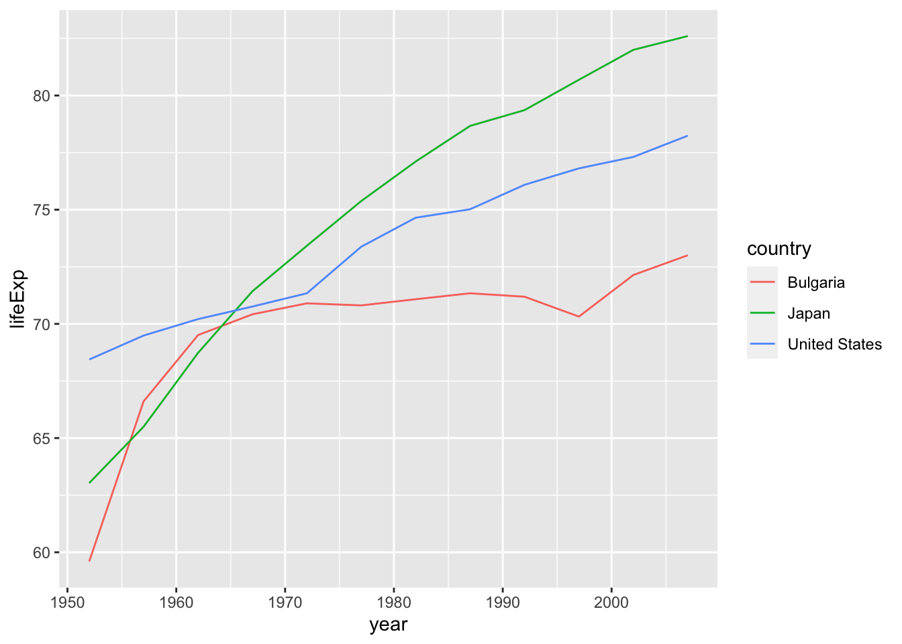
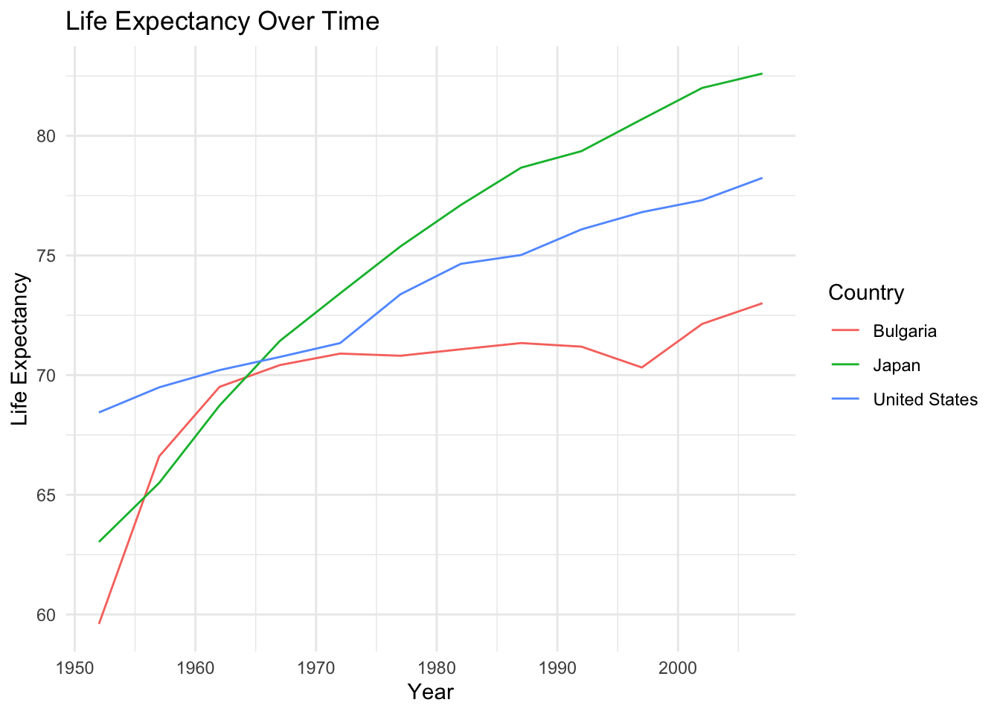

```{r}
#| message: false
library(tidyverse)
library(gapminder)
```Lab 1
1 Overview
Note
To complete this lab, you will need:
- access to the shared posit.cloud space for this course (link in Brightspace)
- a quarto.pub account (free)
- GitHub Copilot account approved and enabled in posit.cloud
Go to the shared posit.cloud workspace for this class and open the Labs project. Open the lab01.qmd file and complete the exercises. Below is an annotated guide to assist you. There is also a video in the Brightspace Todo section for this module.
We will be using the gapminder data for this lab so let’s start by loading the tidyverse family of packages and gapminder. Since this is more of a report, we’ll also be using the message: false option to suppress the output message from loading tidyverse.
2 Exercises
There are seven exercises in this lab. Grading is shown in Section 3 at the end of the document.
2.1 Exercise 1
Using ggplot plot the changes in life expectancy over time for the US, Japan, and Russia. Use a line plot. The geom is geom_line()
First, let’s glimpse() the data to remind us what it looks like.
glimpse(gapminder)Rows: 1,704
Columns: 6
$ country <fct> "Afghanistan", "Afghanistan", "Afghanistan", "Afghanistan", …
$ continent <fct> Asia, Asia, Asia, Asia, Asia, Asia, Asia, Asia, Asia, Asia, …
$ year <int> 1952, 1957, 1962, 1967, 1972, 1977, 1982, 1987, 1992, 1997, …
$ lifeExp <dbl> 28.801, 30.332, 31.997, 34.020, 36.088, 38.438, 39.854, 40.8…
$ pop <int> 8425333, 9240934, 10267083, 11537966, 13079460, 14880372, 12…
$ gdpPercap <dbl> 779.4453, 820.8530, 853.1007, 836.1971, 739.9811, 786.1134, …Next, let’s check the correct spelling of each country to see how we should reference them, remember that country names may have changed over time (e.g., USSR -> Russia and other countries). We can use the pull() function so we don’t get pages of output for a single column and can easily see the names.
gapminder |>
distinct(country) |>
pull() [1] Afghanistan Albania Algeria
[4] Angola Argentina Australia
[7] Austria Bahrain Bangladesh
[10] Belgium Benin Bolivia
[13] Bosnia and Herzegovina Botswana Brazil
[16] Bulgaria Burkina Faso Burundi
[19] Cambodia Cameroon Canada
[22] Central African Republic Chad Chile
[25] China Colombia Comoros
[28] Congo, Dem. Rep. Congo, Rep. Costa Rica
[31] Cote d'Ivoire Croatia Cuba
[34] Czech Republic Denmark Djibouti
[37] Dominican Republic Ecuador Egypt
[40] El Salvador Equatorial Guinea Eritrea
[43] Ethiopia Finland France
[46] Gabon Gambia Germany
[49] Ghana Greece Guatemala
[52] Guinea Guinea-Bissau Haiti
[55] Honduras Hong Kong, China Hungary
[58] Iceland India Indonesia
[61] Iran Iraq Ireland
[64] Israel Italy Jamaica
[67] Japan Jordan Kenya
[70] Korea, Dem. Rep. Korea, Rep. Kuwait
[73] Lebanon Lesotho Liberia
[76] Libya Madagascar Malawi
[79] Malaysia Mali Mauritania
[82] Mauritius Mexico Mongolia
[85] Montenegro Morocco Mozambique
[88] Myanmar Namibia Nepal
[91] Netherlands New Zealand Nicaragua
[94] Niger Nigeria Norway
[97] Oman Pakistan Panama
[100] Paraguay Peru Philippines
[103] Poland Portugal Puerto Rico
[106] Reunion Romania Rwanda
[109] Sao Tome and Principe Saudi Arabia Senegal
[112] Serbia Sierra Leone Singapore
[115] Slovak Republic Slovenia Somalia
[118] South Africa Spain Sri Lanka
[121] Sudan Swaziland Sweden
[124] Switzerland Syria Taiwan
[127] Tanzania Thailand Togo
[130] Trinidad and Tobago Tunisia Turkey
[133] Uganda United Kingdom United States
[136] Uruguay Venezuela Vietnam
[139] West Bank and Gaza Yemen, Rep. Zambia
[142] Zimbabwe
142 Levels: Afghanistan Albania Algeria Angola Argentina Australia ... ZimbabweIt looks like Russia isn’t included in the dataset. Instead of Russia, we’ll examine Bulgaria, Japan, United States. We’ll create a new tibble called three_countries to store our restricted data. Since we are looking at life expectancy changes over time, the three columns we’ll need are country, year, and lifeExp.
Now we can use ggplot to create our chart.
three_countries |>
ggplot(aes(x = year, y = lifeExp)) +
geom_line(aes(color = country))
2.2 Exercise 2
Modify the code below to add a title to the plot, create a more meaningful y-axis label, and use theme_minimal() to change the theme of the plot.
Refer to the Getting Started chapter, which is when we first labeled the axes and added a title to plots.
three_countries |>
ggplot(aes(x = year, y = lifeExp)) +
geom_line(aes(color = country))2.3 Exercise 3
In the empty code chunk below, create the same graphic using three new countries of your choosing. Set the chunk option to render the plot, but not the code.
# insert code here2.4 Exercise 4
Try to recreate the plot and the linked reference to it shown below.

You can see in Figure 1 that Bulgaria’s life expectancy increase slowed starting in the mid 1960s.
Hints
use the chunk option
fig-cap: "Write your caption here"to replicate the caption towards the bottom of the plot.use the chunk option
label: fig-unique_label_nameto make a label that becomes cross-referenceable. Ideally,unique_label_nameshould be something unique and meaningful likethree_country_life_exp. Thefig-prefix is required to properly cross reference figures.After the code chunk with the label has been run or rendered, in the visual editor, you should be able to select Insert -> Cross Reference to place it in the narrative text. It will default as link to “Figure 1” which is the first labeled figure in the document.
# insert code here2.5 Exercise 5
Copilot doesn’t suggest completions when in Visual mode.
Insert a code chunk below using Insert -> Exectuable Cell -> R in the visual editor, then switch to Source mode.
While in source mode, type the following comment line: # Create a plot of life expectancy over time for the United States and Portugal.
In the narrative below the plot, describe how well Copilot did.
2.6 Exercise 6
In the YAML section at the top of the document, replace the author’s name with your own.
2.7 Exercise 7
Publish your document to quarto.pub and copy/paste the link to the Lab 1 assignment in Brightspace.
3 Grading
| Exercise | Points |
|---|---|
| Exercise 1 | 10 |
| Exercise 2 | 10 |
| Exercise 3 | 10 |
| Exercise 4 | 10 |
| Exercise 5 | 10 |
| Exercise 6 | 10 |
| Exercise 7 | 40 |
| Total | 100 |